第一章 集合与映射
数学是一门研究数量关系和空间形式的科学，是一个范围广阔、分支众多、应用广泛的科学体系，是其他各门科学（包括自然科学、社会科学、管理科学与技术科学等）的基础和工具，在整个人类知识体系中占有特殊的地位.
数学起源于计数、测量和贸易等活动. 17 世纪以来，随着物理学、力学等学科的发展和工业技术的崛起，尤其是 Newton 和 Leibniz 发明微积分这划时代的贡献，数学迅速发展起来，到 19 世纪已成为天体力学、弹性力学、流体力学、热学、电磁学和统计物理学中不可缺少的重要工具. 20 世纪以来，数学与自然科学和生产技术的联系达到了新的高度.
20 世纪 70 年代后，随着电子计算机的迅猛发展和普及，数学理论、方法和工具更是以前所未有的广度、深度和速度进入了几乎所有的其他学科. 马克思一百多年前的“一切科学，只有在成功地运用数学时，才算达到了真正完善的地步”的著名论断正在逐步成为现实. 进入 21 世纪以后，随着高新技术的加速发展，数学在人类知识各个领域中愈加大显身手，在科学舞台上扮演更为令人瞩目的角色.
当今，随着学科内部高度发展交融以及与其他领域（尤其是计算机技术）间空前广泛的渗透，数学已成为一座巍峨的科学大厦. 但是，万丈高楼平地起，就研究数量关系和空间形式而言，必须从变量间最本质的联系，即函数开始起步. 数学分析正是讲述函数理论的最基本的课程，是几乎所有后继数学课程的奠基石，因此，它理所当然地被列为数学科学最重要的基础课之一，在培养具有良好的数学素养的人才方面，它所起的作用是任何别的课程无法相比的.
历史上，微积分的形成和发展直接得益于物理学、天文学、几何学等领域的研究，因而当微积分一旦形成为一门学科，它在这些应用领域中就极具应用活力. 因此，学习数学分析不仅要循序渐进地深刻领会已抽象出来的普遍结论，更要切实掌握用数学工具分析问题、转化问题、解决问题的思想和方法——这是开设本课程的宗旨.
§1 集合
集合
面对浩瀚的大千世界，人们总要先把林林总总的客观事物按其某一方面的特性进行适当划分，再分门别类地加以研究. 所谓的“物以类聚”在某种程度上反映出了人类普遍的思维模式，在各个领域中被广泛使用的集合的概念正是这一原则最基本的体现.
集合在数学领域更是具有无可比拟的特殊重要性. 集合论的基础是由德国数学家 Cantor 在 19 世纪 70 年代奠定的，经过一大批卓越的数学家半个世纪的努力，到 20 世纪 20 年代已确立了其在现代数学理论体系中的基础地位，可以说，当今数学各个分支的几乎所有结果都构筑在严格的集合理论上. 所以，学习现代数学，应该由集合入手. 但集合论是一门深奥的理论，需要有专门的课程来讲述，我们下面谈的只是数学分析课程要涉及的有关集合的一些基本概念和问题.
集合又称集，是指具有某种特定性质的具体的或抽象的对象汇集成的总体，这些对象称为该集合的元素. 我们通常用大写字母如 $A, B, S, T, \dots$ 表示集合，而用小写字母如 $a, b, x, y, \dots$ 表示集合的元素.
若 $x$ 是集合 $S$ 的元素，则称 $x$ 属于 $S$，记为 $x \in S$. 若 $y$ 不是集合 $S$ 的元素，则称 $y$ 不属于 $S$，记为 $y \notin S$ 或 $y \bar{\in} S$.
全体正整数的集合，全体整数的集合，全体有理数的集合，全体实数的集合是我们常用的集合，习惯上分别用字母 $\mathbb{N}^*, \mathbb{Z}, \mathbb{Q}$ 和 $\mathbb{R}$ 来表示①.
表示集合的方式通常有两种. 一种是枚举法，就是将集合的元素逐一列举出来的方式. 例如，光学中的三基色可以用集合
$$ \{ \text{红}, \text{绿}, \text{蓝} \} $$表示，由 $a, b, c, d$ 四个字母组成的集合 $A$ 可用
$$ A = \{ a, b, c, d \} $$表示，如此等等.
枚举法还包括尽管集合的元素无法一一列举，但可以将它们的变化规律表示出来的情况. 如正整数集 $\mathbb{N}^*$ 和整数集 $\mathbb{Z}$ 可以分别表示为
$$ \mathbb{N}^* = \{ 1, 2, 3, \dots, n, \dots \} $$和
$$ \mathbb{Z} = \{ 0, \pm 1, \pm 2, \pm 3, \dots, \pm n, \dots \}. $$另一种表示集合的方式是描述法. 设集合 $S$ 是由具有某种性质 $P$ 的元素全体所构成的，则可以采用描述集合中元素公共属性的方法来表示集合：
$$ S = \{ x \mid x \text{ 具有性质 } P \}. $$例如，由 2 的平方根组成的集合 $B$ 可表示为
$$ B = \{ x \mid x^2 = 2 \}, $$而有理数集 $\mathbb{Q}$ 和正实数集 $\mathbb{R}^+$ 则可以分别表示为
$$ \mathbb{Q} = \left\{ x \;\middle|\; x = \frac{q}{p}, p \in \mathbb{N}^*, q \in \mathbb{Z} \right\} $$和
$$ \mathbb{R}^+ = \{ x \mid x \in \mathbb{R} \text{ 并且 } x > 0 \}. $$要注意的是，集合中的元素之间并没有次序关系，也就是说，在集合的表示中，同
一元素的重复出现或在不同位置上出现不具有任何特殊意义. 例如，$\{a, b\}$、$\{b, a\}$ 和 $\{a, b, a\}$ 表示的是同一个集合.
有一类特殊的集合，它不包含任何元素，如 $\{ x \mid x \in \mathbb{R} \text{ 并且 } x^2 + 1 = 0 \}$，我们称之为空集，记为 $\emptyset$. 要注意，空集并不由于其内部空空如也而失去存在价值，如在集合 $\{\text{红}, \text{绿}, \text{蓝}\}$ 中选取某些基色进行配色，三种基色都不选显然也同样是一种重要的配色方案，所以，空集具有很实际的意义.
设 $S, T$ 是两个集合，如果 $S$ 的所有元素都属于 $T$，即
$$ x \in S \Longrightarrow x \in T, $$其中符号“$\Longrightarrow$”称为“蕴含”，即表示由左边的命题可以推出右边的命题，则称 $S$ 是 $T$ 的子集，记为 $S \subset T$. 例如，对于正整数集 $\mathbb{N}^*$，整数集 $\mathbb{Z}$，有理数集 $\mathbb{Q}$ 与实数集 $\mathbb{R}$，成立
$$ \mathbb{N}^* \subset \mathbb{Z} \subset \mathbb{Q} \subset \mathbb{R}. $$显然，对任何集合 $S$，都有 $S \subset S$ 与 $\emptyset \subset S$.
如果 $S$ 中至少存在一个元素 $x$ 不属于 $T$，即 $x \in S$ 但 $x \notin T$，那么 $S$ 不是 $T$ 的子集，记为 $S \not\subset T$. 如
$$ \{ x \mid x^2 - 1 = 0 \} \not\subset \mathbb{N}^*. $$如果 $S$ 是 $T$ 的一个子集，即 $S \subset T$，但在 $T$ 中存在一个元素 $x$ 不属于 $S$，即 $T \not\subset S$，则称 $S$ 是 $T$ 的一个真子集. 在上面所举的集合 $T = \{a_1, a_2, \dots, a_n\}$ 的 $2^n$ 个子集中，有 $2^n - 1$ 个是真子集.
如果两个集合 $S$ 与 $T$ 的元素完全相同，则称 $S$ 与 $T$ 两集合相等，记为 $S = T$. 显然我们有
$$ S = T \iff S \subset T \text{ 并且 } T \subset S, $$其中符号“$\iff$”称为“当且仅当”，表示左边的命题与右边的命题相互“蕴含”，即两个命题“等价”.
在数学分析课程中，最常遇到的实数集的子集是区间：
设 $a, b \; (a < b)$ 是两个实数，则满足不等式 $a < x < b$ 的所有实数 $x$ 的集合称为以 $a, b$ 为端点的开区间，记为
$$ (a, b) = \{ x \mid a < x < b \}. $$满足不等式 $a \le x \le b$ 的所有实数 $x$ 的集合称为以 $a, b$ 为端点的闭区间，记为
$$ [a, b] = \{ x \mid a \le x \le b \}. $$满足不等式 $a < x \le b$ 或 $a \le x < b$ 的所有实数 $x$ 的集合称为以 $a, b$ 为端点的半开半闭区间，分别记为
$$ (a, b] = \{ x \mid a < x \le b \} \quad \text{或} \quad [a, b) = \{ x \mid a \le x < b \}. $$上述几类区间的长度是有限的，称为有限区间. 除此以外，还有下述几类无限区间：
$$ (a, +\infty) = \{ x \mid x > a \}; \quad [a, +\infty) = \{ x \mid x \ge a \}; $$ $$ (-\infty, b) = \{ x \mid x < b \}; \quad (-\infty, b] = \{ x \mid x \le b \}; $$和
$$ (-\infty, +\infty) = \{ x \mid x \text{ 为任意实数} \} \quad (\text{即实数集 } \mathbb{R}). $$集合运算
集合的基本运算有并、交、差、补四种（如图 1.1.1）.
两个集合 $S$ 和 $T$ 的并是由 $S$ 和 $T$ 的元素汇集成的集合，记为 $S \cup T$，即：
$$ S \cup T = \{ x \mid x \in S \text{ 或者 } x \in T \}. $$两个集合 $S$ 和 $T$ 的交是由 $S$ 和 $T$ 的公共元素组成的集合，记为 $S \cap T$，即：
$$ S \cap T = \{ x \mid x \in S \text{ 并且 } x \in T \}. $$例如，设 $S = \{a, b, c\}, T = \{b, c, d, e\}$，则
$$ S \cup T = \{a, b, c, d, e\}, \quad S \cap T = \{b, c\}. $$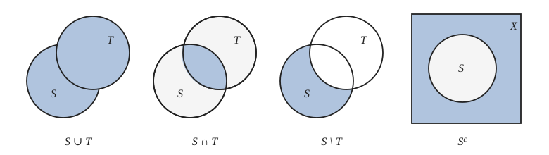
集合的并与交运算具有下列一些性质：
1. 交换律
$$ A \cup B = B \cup A, \quad A \cap B = B \cap A. $$2. 结合律
$$ A \cup (B \cup D) = (A \cup B) \cup D, \quad A \cap (B \cap D) = (A \cap B) \cap D. $$3. 分配律
$$ A \cap (B \cup D) = (A \cap B) \cup (A \cap D), \quad A \cup (B \cap D) = (A \cup B) \cap (A \cup D). $$作为一个例子，我们证明
$$ A \cup (B \cap D) = (A \cup B) \cap (A \cup D). $$第一步，证明 $A \cup (B \cap D) \subset (A \cup B) \cap (A \cup D)$.
设 $x \in A \cup (B \cap D)$，按照并的定义，或者 $x \in A$，或者 $x \in B \cap D$；再按照交的定义即为：或者 $x \in A$，或者 $x \in B$ 并且 $x \in D$. 所以，不管怎么样，总有 $x \in A \cup B$ 并且 $x \in A \cup D$，即 $x \in (A \cup B) \cap (A \cup D)$. 于是
$$ x \in A \cup (B \cap D) \Longrightarrow x \in (A \cup B) \cap (A \cup D). $$第二步，证明 $(A \cup B) \cap (A \cup D) \subset A \cup (B \cap D)$.
设 $x \in (A \cup B) \cap (A \cup D)$，按照交的定义，$x \in A \cup B$ 并且 $x \in A \cup D$；再按照并的定义，或者 $x \in A$，或者 $x \in B$ 并且 $x \in D$，即 $x \in A \cup (B \cap D)$. 于是
$$ x \in (A \cup B) \cap (A \cup D) \Longrightarrow x \in A \cup (B \cap D). $$将上述两步结合起来，就得到结论
$$ A \cup (B \cap D) = (A \cup B) \cap (A \cup D). $$ 证毕两个集合 $S$ 和 $T$ 的差是由属于 $S$ 但不属于 $T$ 的元素组成的集合，记为 $S \setminus T$（注意这里并不要求 $T \subset S$），即
$$ S \setminus T = \{ x \mid x \in S \text{ 并且 } x \notin T \}. $$例如
$$ \{a, b, c\} \setminus \{b, c, d, e\} = \{a\}, \quad \{ x \mid x < 1 \} \setminus \{ x \mid x \ge 0 \} = \{ x \mid x < 0 \}. $$假设我们在集合 $X$ 中讨论某一问题，$S$ 是 $X$ 的一个子集，则集合 $S$ 关于 $X$ 的补集 $S_X^c$ 定义为①
$$ S_X^c = X \setminus S. $$例如偶数集 $E$ 关于整数集 $\mathbb{Z}$ 的补集为奇数集 $O$，有理数集 $\mathbb{Q}$ 关于实数集 $\mathbb{R}$ 的补集为无理数集.
关于补集显然成立
$$ S \cup S^c = X, \quad S \cap S^c = \emptyset. $$在不会发生混淆的前提下，通常将 $S_X^c$ 简记为 $S^c$.
容易知道，集合补与差运算满足关系
$$ S \setminus T = S \cap T^c. $$集合补的运算具有如下性质：
4. 对偶律（De Morgan 公式）
$$ (A \cup B)^c = A^c \cap B^c, \quad (A \cap B)^c = A^c \cup B^c. $$我们证明第二个公式.
先设 $x \in (A \cap B)^c$，按照补的定义，有 $x \notin A \cap B$. 此式等价于或者 $x \notin A$，或者 $x \notin B$，于是得到 $x \in A^c \cup B^c$，即
$$ x \in (A \cap B)^c \Longrightarrow x \in A^c \cup B^c. $$反过来，设 $x \in A^c \cup B^c$，按照并的定义，或者 $x \in A^c$，或者 $x \in B^c$. 换言之，或者 $x \notin A$，或者 $x \notin B$，于是得到 $x \notin A \cap B$，即
$$ x \in A^c \cup B^c \Longrightarrow x \in (A \cap B)^c. $$将上述两方面结合起来，就得到结论
$$ (A \cap B)^c = A^c \cup B^c. $$ 证毕有限集与无限集
若集合 $S$ 由 $n$ 个元素组成，这里 $n$ 是确定的非负整数，则称集合 $S$ 为有限集，如 $\{\text{红}, \text{绿}, \text{蓝}\}$、$\{a, b, c, d\}$ 和 $\{x \mid x^2 - 3x + 2 = 0\}$ 都是有限集.
不是有限集的集合称为无限集，前面说的 $\mathbb{N}^*, \mathbb{Z}, \mathbb{Q}, \mathbb{R}$ 都是无限集.
如果一个无限集中的元素可以按某种规律排成一个序列，或者说，这个集合可表示为
$$ \{ a_1, a_2, \dots, a_n, \dots \}, $$则称其为可列集（或可数集）. 例如，正整数集 $\mathbb{N}^*$、$\{x \mid \sin x = 0\}$ 都是可列集.
容易证明，每个无限集必包含可列子集. 但是，无限集并非就一定是可列集（在 §2.4，
我们将证明实数集 $\mathbb{R}$ 不是可列集）.
显然，要证明一个无限集是可列集，关键在于设计出一种排列的规则，使集合中所有元素可以按此规则，既无重复也无遗漏地排成一列.
将整数全体排成一列的方法是多种多样的，这只是其中的一种.
设 $A_n \; (n = 1, 2, 3, \dots)$ 是无限可列个集合，其中每个集合 $A_n$ 都是可列集，定义它们的并为
$$ \bigcup_{n=1}^\infty A_n = A_1 \cup A_2 \cup \cdots \cup A_n \cup \cdots = \{ x \mid \text{存在 } n \in \mathbb{N}^*, \text{使 } x \in A_n \}, $$那么可以证明，$\bigcup_{n=1}^\infty A_n$ 也是可列集.
把所有这些元素排成一列的规则可以有许多，常用的一种称为对角线法则：从最左面开始，顺着逐条“对角线”（图中箭头所示）将元素按从右上至左下的次序排列，也就是把所有的元素排列成
$$ x_{11}, x_{12}, x_{21}, x_{13}, x_{22}, x_{31}, x_{14}, x_{23}, x_{32}, x_{41}, \dots, $$这样的规则保证了不会遗漏一个元素.
由于不同集合 $A_i$ 与 $A_j \; (i \ne j)$ 的交可能不是空集，因此有些元素可能会在排列中多次出现，我们对此只保留一个而去掉多余的，这样得到的排列仍然表示集合 $\bigcup_{n=1}^\infty A_n$，从而定理得到证明.
证毕证明区间 $(0, 1]$ 中的有理数是可列集即可.
由于区间 $(0, 1]$ 中的有理数可惟一地表示为既约分数 $\frac{q}{p}$，其中 $p \in \mathbb{N}^*, q \in \mathbb{N}^*, q \le p$，并且 $p, q$ 互素. 我们按下列方式排列这些有理数：
分母 $p=1$ 的既约分数只有一个：$r_{11} = \frac{1}{1} = 1$；
分母 $p=2$ 的既约分数也只有一个：$r_{21} = \frac{1}{2}$；
分母 $p=3$ 的既约分数有两个：$r_{31} = \frac{1}{3}, r_{32} = \frac{2}{3}$；
分母 $p=4$ 的既约分数也只有两个：$r_{41} = \frac{1}{4}, r_{42} = \frac{3}{4}$；
$\dots\dots$
一般地，分母 $p=n$ 的既约分数至多不超过 $n-1$ 个，可将它们记为 $r_{n1}, r_{n2}, \dots, r_{nk(n)}$，其中 $k(n) \le n$.
于是区间 $(0, 1]$ 中的有理数全体可以排成
$$ r_{11}, r_{21}, r_{31}, r_{32}, r_{41}, r_{42}, \dots, r_{n1}, r_{n2}, \dots, r_{nk(n)}, \dots, $$这就证明了有理数集 $\mathbb{Q}$ 是可列集.
证毕Descartes 乘积集合
设 $A$ 与 $B$ 是两个集合. 在集合 $A$ 中任意取一个元素 $x$，在集合 $B$ 中任意取一个元素 $y$，组成一个有序对 $(x, y)$. 把这样的有序对作为新的元素，它们全体组成的集合称为集合 $A$ 与集合 $B$ 的 Descartes 乘积集合（直积），记为 $A \times B$，即
$$ A \times B = \{ (x, y) \mid x \in A \text{ 并且 } y \in B \}. $$集合 $A$ 与集合 $B$ 可以相同也可以不相同，甚至其元素可以是完全不同类型的.
比如说，有一家生产窗帘的厂，所用的面料颜色有红、绿、蓝三种，所用的工艺有抽纱、提花、印染、刺绣等四种. 若用
$$ A = \{ \text{红}, \text{绿}, \text{蓝} \} $$表示面料颜色的集合，
$$ B = \{ \text{抽纱}, \text{提花}, \text{印染}, \text{刺绣} \} $$表示加工工艺的集合，那么它们的 Descartes 乘积集合
$$ A \times B = \{ (x, y) \mid x \in A \text{ 并且 } y \in B \} $$表示的是该厂生产的所有的窗帘品种. 集合 $A \times B$ 中共有 12 个元素，如 (红, 提花)、(蓝, 印染)、(绿, 抽纱) 等，每个元素均表示该厂所生产的窗帘品种之一.
特别地，当 $A$ 与 $B$ 都是实数集 $\mathbb{R}$ 时，$\mathbb{R} \times \mathbb{R}$（记作 $\mathbb{R}^2$）表示的是平面 Descartes 直角坐标系下用坐标表示的点的集合.（这也是“Descartes 乘积集合”一词的来历.）平面上任意一点 $P$ 的坐标可以用有序实数对 $(x, y)$ 表示，其中 $x$ 和 $y$ 分别为 $P$ 点在横轴和纵轴上的投影坐标. 反过来，任意一个实数对 $(x, y)$ 也都能通过坐标的方式找到平面上惟一的对应点，这正是我们熟知的平面解析几何的理论基础.
读者不难举一反三地推出由更多个集合构成 Descartes 乘积集合的情况. 作为一个
特例，容易知道 $\mathbb{R} \times \mathbb{R} \times \mathbb{R}$（记作 $\mathbb{R}^3$）表示的是空间 Descartes 直角坐标系下用坐标表示的点的集合.
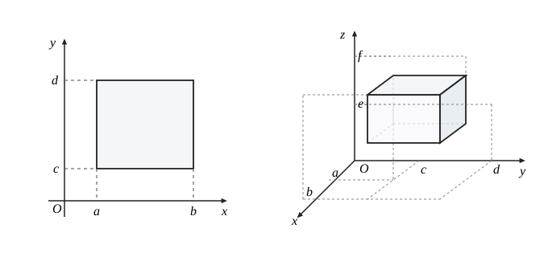
习 题 1.1
- 1. 证明由 $n$ 个元素组成的集合 $T = \{a_1, a_2, \dots, a_n\}$ 有 $2^n$ 个子集.
-
2.
证明：
(1) 任意无限集必包含一个可列子集；(2) 设 $A$ 与 $B$ 都是可列集，证明 $A \cup B$ 也是可列集.
-
3.
指出下列表述中的错误：
(1) $\{\emptyset\} = \emptyset$；(2) $a \subset \{a, b, c\}$；(3) $\{a, b\} \in \{a, b, c\}$；(4) $\{a, b, \{a, b\}\} = \{a, b\}$.
-
4.
用集合符号表示下列数集：
(1) 满足 $\frac{x-3}{x+2} \le 0$ 的实数全体；(2) 平面上第一象限的点的全体；(3) 大于 0 并且小于 1 的有理数全体；(4) 方程 $\sin x \cot x = 0$ 的实数解全体.
-
5.
证明下列集合等式：
(1) $A \cap (B \cup D) = (A \cap B) \cup (A \cap D)$；(2) $(A \cup B)^c = A^c \cap B^c$.
-
6.
举例说明集合运算不满足消去律：
(1) $A \cup B = A \cup C \;\not\Longrightarrow\; B = C$；(2) $A \cap B = A \cap C \;\not\Longrightarrow\; B = C$.其中符号“$\not\Longrightarrow$”表示左边的命题不能推出右边的命题.
-
7.
下述命题是否正确？不正确的话，请改正.
(1) $x \notin A \cap B \iff x \notin A \text{ 并且 } x \notin B$；(2) $x \notin A \cup B \iff x \notin A \text{ 或者 } x \notin B$.
§2 映射与函数
映射
映射是指两个集合之间的一种对应关系.
概括起来，构成一个映射必须具备下列三个基本要素：
(1) 集合 $X$，即定义域 $D_f = X$；
(2) 集合 $Y$，即限制值域的范围：$R_f \subset Y$；
(3) 对应规则 $f$，使每一个 $x \in X$，有惟一确定的 $y = f(x)$ 与之对应.
需要指出两点：
1. 映射要求元素的像必须是惟一的.
例如，设 $X = \mathbb{R}^+, Y = \mathbb{R}$，而对应规则 $f$ 要求对每一个 $x \in \mathbb{R}^+$，它的像 $y \in \mathbb{R}$ 且满足关系 $y^2 = x$，这样的 $f$ 是不是映射呢？回答是否定的. 因为对每个 $x > 0$，都可以有两个实数 $y_1 = \sqrt{x}$ 与 $y_2 = -\sqrt{x}$ 与之对应，即 $f$ 不满足像的惟一性要求.
对于不满足像的惟一性要求的对应规则，一般只要对值域范围稍加限制，就能使它成为映射.
2. 映射并不要求逆像也具有惟一性.
上面例 1.2.2 与例 1.2.3 中的映射是单射，例 1.2.1 与例 1.2.3 中的映射是满射，因而例 1.2.3 中的映射是双射.
设 $f: X \longrightarrow Y$ 是单射，则由定义 1.2.2，对任一 $y \in R_f \subset Y$，它的逆像 $x \in X$（即满足方程 $f(x) = y$ 的 $x$）是惟一确定的. 由定义 1.2.1，对应关系
$$ g: R_f \longrightarrow X $$ $$ y \longmapsto x \quad (f(x) = y) $$构成了 $R_f$ 到 $X$ 上的一个映射，我们把它称为 $f$ 的逆映射，记为 $f^{-1}$，其定义域为 $D_{f^{-1}} = R_f$，值域为 $R_{f^{-1}} = X$.
显然，只要逆映射 $f^{-1}$ 存在，它就一定是 $R_f$ 到 $X$ 上的双射.
现设有如下两个映射
$$ g: X \longrightarrow U_g, \quad x \longmapsto u = g(x) $$和
$$ f: U_f \longrightarrow Y, \quad u \longmapsto y = f(u). $$如果 $R_g \subset U_f = D_f$，那就可以构造出一个新的对应关系
$$ f \circ g: X \longrightarrow Y $$ $$ x \longmapsto y = f(g(x)), $$由定义 1.2.1，这还是一个映射，我们将之称为 $f$ 和 $g$ 的复合映射.
可以看出，复合映射 $f \circ g$ 的构成，实质上是引入了中间变量，因此关键在于 $R_g \subset D_f$ 是否成立. 如果这一条件得不到满足，就不能构成复合映射.
但若将映射 $g$ 的定义域作一限制，即换成映射 $g^*$： $$ g^*: X = (-1, 1) \longrightarrow \mathbb{R}, \quad x \longmapsto u = 1 - x^2 $$ 和 $$ f: \mathbb{R}^+ \longrightarrow \mathbb{R}, \quad u \longmapsto y = \lg u. $$ 则 $R_{g^*} = (0, 1] \subset D_f$，于是可以构成复合映射 $$ f \circ g^*: X = (-1, 1) \longrightarrow \mathbb{R}, \quad x \longmapsto y = \lg(1 - x^2). $$
要注意，映射 $f$ 和 $g$ 的复合是有顺序的. 这就是说，$f \circ g$ 有意义并不意味 $g \circ f$ 也一定有意义，即使都有意义，即 $R_g \subset D_f$ 与 $R_f \subset D_g$ 都满足，复合映射 $f \circ g$ 与 $g \circ f$ 一般来讲也是不同的.
特别地，若将映射 $f$ 与它的逆映射 $f^{-1}$ 进行复合，则得到下述两恒等式：
$$ f \circ f^{-1}(y) = y, \quad y \in R_f; \qquad f^{-1} \circ f(x) = x, \quad x \in X. $$一元实函数
若在定义 1.2.1 中特殊地取集合 $X \subset \mathbb{R}$，集合 $Y = \mathbb{R}$，则映射
$$ f: X \longrightarrow Y $$ $$ x \longmapsto y = f(x) $$称为一元实函数，简称函数. 由于函数表示的必是实数集合与实数集合之间的对应关系，所以在其映射表示中，第一行是不需要的，只要写成
$$ y = f(x), \quad x \in X \; (= D_f) $$就可以了，读作“函数 $y = f(x)$”或“函数 $f$”. 这里 $f$ 表示一种对应规则，对于每一个 $x \in D_f$，它确定了惟一的 $y = f(x) \in \mathbb{R}$ 与之相对应.
例如，我们将一块边长为 $a$ 的正方形铁皮，在四个角上各剪去一个边长为 $x$ 的小正方形，做成一个无盖的方盒（如图 1.2.1），显然方盒的容积为 $V = x(a - 2x)^2$，其中 $x$ 的变化范围是 $\left(0, \frac{a}{2}\right)$.
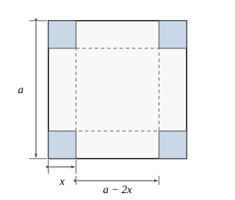
分析一下对应关系 $V = x(a - 2x)^2$，其中变量 $x$ 是主动变化的，我们称它为自变量. 随着 $x$ 的变化，容积 $V$ 是被动地变化，我们称它为因变量. 当自变量在定义域 $D_V = \left(0, \frac{a}{2}\right)$ 中取任一数值时，因变量 $V$ 相应有惟一确定的数值. 因变量对于自变量的这种依赖关系就叫做函数关系.
在观察自然现象和分析社会活动时，可以发现存在着许许多多的变量，它们在一定的约束关系制约下千变万化. 前面已经指出，数学分析的根本任务是研究各种变量之间最基本的关系，即函数关系. 这里给出的一元实函数是只含有一个自变量与一个因变量的函数关系，以后会进一步讨论多元函数（含有多个自变量的函数关系）与向量值函数（含有多个因变量的函数关系）.
初等函数
我们对下面 6 类函数已经很熟悉了：
常数函数： $y = c$；
幂函数： $y = x^\alpha \quad (\alpha \in \mathbb{R})$；
指数函数： $y = a^x \quad (a > 0 \text{ 且 } a \ne 1)$；
对数函数： $y = \log_a x \quad (a > 0 \text{ 且 } a \ne 1)$；
三角函数： 如 $y = \sin x, y = \cos x, y = \tan x, y = \cot x$ 等；
反三角函数： 如 $y = \arcsin x, y = \arccos x, y = \arctan x$ 等.
这 6 类函数统称为基本初等函数.
由基本初等函数经过有限次四则运算与复合运算所产生的函数称初等函数. 例如 $y = ax^2 + bx + c$, $y = \frac{\log_a(1+x)}{x^2+1}$, $y = \sin^2 x + \cos^2 x + \arctan \frac{1}{x}$ 等都是初等函数.
初等函数的自然定义域是指它的自变量的最大取值范围. 例如 $x^n$（$n$ 是正整数），$\sin x, \arctan x, a^x \; (a > 0, a \ne 1)$ 等函数的自然定义域都是 $\mathbb{R} = (-\infty, +\infty)$；$\log_a x \; (a > 0, a \ne 1)$ 的自然定义域是 $\mathbb{R}^+ = (0, +\infty)$；$\arcsin x$ 的自然定义域是 $[-1, 1]$；$x^\alpha$ 的自然定义域则
要视 $\alpha$ 而定，例如：$x^3$ 的自然定义域是 $\mathbb{R} = (-\infty, +\infty)$；$x^{-1}$ 的自然定义域是 $\mathbb{R} \setminus \{0\} = (-\infty, 0) \cup (0, +\infty)$；$x^{\frac{1}{2}}$ 的自然定义域是 $[0, +\infty)$；$x^{\sqrt{2}}$ 的自然定义域是 $\mathbb{R}^+ = (0, +\infty)$ 等.
一般说来，给出一个函数 $f(x)$ 的具体表达式的同时应该指出它的定义域，否则即表示默认该函数的自然定义域为其定义域.
(1) $y = x + \frac{1}{x}$；
(2) $y = \arcsin \frac{2x - 1}{3}$；
(3) $y = \sqrt{3 + 2x - x^2}$；
(4) $y = \log_a \frac{x-2}{x^2 - 3x - 4} \quad (a > 0, a \ne 1)$.
(1) $D = (-\infty, 0) \cup (0, +\infty)$, $R = (-\infty, -2] \cup [2, +\infty)$；
(2) $D = [-1, 2]$, $R = \left[-\frac{\pi}{2}, \frac{\pi}{2}\right]$；
(3) $D = [-1, 3]$, $R = [0, 2]$；
(4) $D = (-1, 2) \cup (4, +\infty)$, $R = (-\infty, +\infty)$.
需要指出，即使两个函数关系看上去完全相同，也不一定能说这两个函数就是等同的，因为它们的定义域可能不相同. 如函数 $f(x) = \sin x$ 与 $g(x) = \frac{2\sin \frac{x}{2}\cos \frac{x}{2}}{\frac{x}{x}}$，因为 $D_f = (-\infty, +\infty)$ 而 $D_g = (-\infty, 0) \cup (0, +\infty)$，所以它们表示的是不同的函数.
当两个函数不仅函数关系相同，而且定义域也相同时（于是它们的值域必然相同），它们表示的是相同的函数，至于此时自变量与因变量采用什么符号倒是无关紧要的. 例如 $y = \sin x, x \in (-\infty, +\infty)$ 与 $w = \sin v, v \in (-\infty, +\infty)$ 表示的是同一个函数.
函数的分段表示、隐式表示与参数表示
设 $A, B$ 是两个互不相交的实数集合，$\varphi(x)$ 和 $\psi(x)$ 是分别定义在集合 $A$ 和集合 $B$ 上的函数，则
$$ f(x) = \begin{cases} \varphi(x), & x \in A, \\ \psi(x), & x \in B \end{cases} $$是定义在集合 $A \cup B$ 上的函数. 这样的表示方法称为函数的分段表示. 这里函数 $f$ 是分成两段来表示的，事实上，分段表示可以分成任意有限段，甚至无限多段.
下面我们介绍几个常用的分段表示函数.
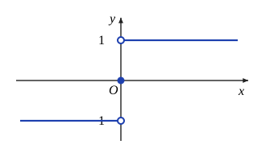
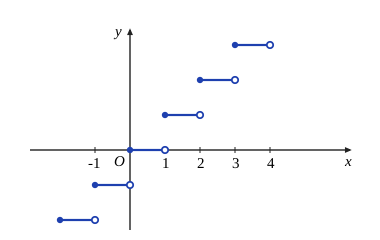
如对 $x = 3.4$，有 $[x] = 3, (x) = 0.4$；对 $x = -2.7$，有 $[x] = -3, (x) = 0.3$ 等. 显然，对于任意实数 $x$，成立等式 $[x] + (x) = x$.
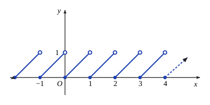
若函数 $y = f(x)$ 中的因变量 $y$ 可以通过自变量 $x$ 的一个算式直接表示出来，如上面讨论的所有函数，这种表示方式称为显式表示，由显式表示所给出的函数称为显函数. 但有时变量 $x$ 与 $y$ 之间的函数关系并不直接表示为 $y = f(x)$ 的形式，而是通过一个二元方程
$$ F(x, y) = 0 $$来确定，这种表示方式称为隐式表示，由隐式表示所给出的函数称为隐函数.
但在一定的条件下，如要求 $y \ge 0$（或 $y \le 0$），即只考虑上半圆周（或下半圆周）时，方程 $x^2 + y^2 = R^2$ 就在 $[-R, R]$ 上确定了惟一的函数关系：
$$ y = \sqrt{R^2 - x^2} \quad (\text{或 } y = -\sqrt{R^2 - x^2}), \quad x \in [-R, R]. $$这就给出了由方程 $x^2 + y^2 = R^2$ 隐式表示的两个函数.
不仅如此，我们还可以将变量 $x$ 和 $y$ 与第三个变量 $t$（称为参数）联系起来，使得当参数 $t$ 在某个集合 $T$ 中变化时，所确定的一对有序实数 $(x(t), y(t))$ 恰好满足方程 $F(x, y) = 0$，即满足恒等式
$$ F(x(t), y(t)) \equiv 0, \quad t \in T. $$如果从 $x = x(t), t \in T$ 中能够解出 $t$ 作为 $x$ 的单值函数 $t = t(x), x \in X$，将其代入 $y = y(t)$，就得到变量 $x$ 与 $y$ 之间的函数关系
$$ y = y(t(x)), \quad x \in X. $$这种通过参数将变量 $x$ 与 $y$ 之间的函数关系表示成
$$ \begin{cases} x = x(t), \\ y = y(t), \end{cases} \quad t \in T $$的方式称为参数表示，由参数表示所给出的函数称为参数表示的函数. 此时自变量 $x$ 与因变量 $y$ 之间的函数关系即为
$$ f: X \longrightarrow Y $$ $$ x = x(t) \longmapsto y = y(t). $$例如，对于例 1.2.13 中的圆方程 $x^2 + y^2 = R^2$ 所确定的函数关系，可以引入参数 $t$ 表示 $x$ 轴正向按逆时针方向旋转至射线 $\overline{OP}$ 的角的弧度，其中 $P = P(x, y)$ 表示圆上任意一点（如图 1.2.5）. 则对于上半圆周（或下半圆周），$x$ 与 $y$ 的函数关系可表示成
$$ \begin{cases} x = R \cos t, \\ y = R \sin t, \end{cases} \quad t \in [0, \pi] \quad (\text{或 } t \in [\pi, 2\pi]). $$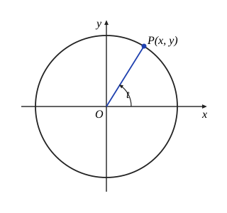
旋轮线又称摆线，顾名思义，它表示一只滚动的轮子的边缘上一点的运动轨迹. 下面我们通过引入适当的参数，推导旋轮线所表示的函数关系的参数表示.
令参数 $t$ 表示轮子转过的角度的弧度，于是得到 $$ \begin{cases} x = t - \sin t, \\ y = 1 - \cos t, \end{cases} \quad t \in [0, \infty). $$ 此即为旋轮线的参数表示.
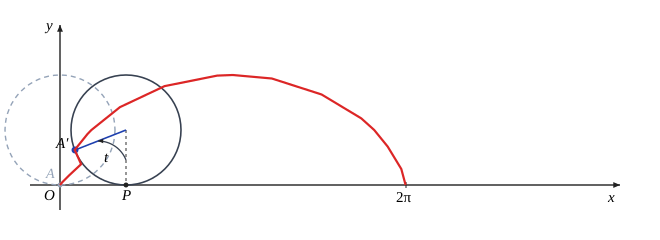
函数的简单特性
(1) 有界性
注意，当一个函数有界时，它的上界与下界不惟一. 由上面定义可知，任意小于 $m$ 的数也是 $f$ 的下界，任意大于 $M$ 的数也是 $f$ 的上界.
有界函数的另一定义是：
“存在常数 $M > 0$，使函数 $y = f(x), x \in D$ 满足 $|f(x)| \le M, x \in D$”，容易证明这两种定义是等价的.
(2) 单调性
例如，$y = x^n, y = a^x \; (a > 1), y = \log_a x \; (a > 1), y = \arctan x$ 等函数在它们的定义域中都是严格单调增加的；而 $y = a^x \; (0 < a < 1), y = \log_a x \; (0 < a < 1), y = \operatorname{arccot} x$ 等函数在它们的定义域中都是严格单调减少的；$y = [x]$ 是单调增加的，但不是严格单调增加的.
也有许多函数在它的自然定义域中并非单调，但在较小的范围内却具有单调性. 例如 $y = x^2$ 在 $(-\infty, +\infty)$ 不具有单调性，但在 $(-\infty, 0]$ 是严格单调减少的，在 $[0, +\infty)$ 是严格单调增加的；$y = \sin x$ 在 $\left[2n\pi - \frac{\pi}{2}, 2n\pi + \frac{\pi}{2}\right] \; (n \in \mathbb{Z})$ 是严格单调增加的，在 $\left[2n\pi + \frac{\pi}{2}, 2n\pi + \frac{3\pi}{2}\right] \; (n \in \mathbb{Z})$ 是严格单调减少的.
(3) 奇偶性
显然，奇函数的图像关于原点对称，偶函数的图像关于 $y$ 轴对称. 了解了函数的奇偶性，我们只需在 $D \cap [0, +\infty)$ 上讨论函数的性质，再由对称性推出它在 $D \cap (-\infty, 0]$ 上的性质.
例如，$y = x^{2n} \; (n \in \mathbb{Z})$、$y = \cos x$ 等都是偶函数；
$y = x^{2n-1} \; (n \in \mathbb{Z})$、$y = \sin x$ 等都是奇函数.
(4) 周期性
显然，周期函数 $f$ 的定义域 $D$ 必须满足条件：对一切 $x \in D$，有 $x \pm T \in D$.
例如 $y = \sin x$ 是 $(-\infty, +\infty)$ 上的周期函数，$2n\pi \; (n \in \mathbb{N}^*)$ 都是它的周期，其中 $2\pi$ 是它的最小正周期；$y = \tan x$ 也是周期函数，它的定义域是 $(-\infty, +\infty) \setminus \left\{ \frac{\pi}{2} + n\pi, n \in \mathbb{Z} \right\}$，$\pi$ 是它的最小正周期.
但并非每个周期函数都有最小正周期的.
对于周期函数，我们只需要研究它在一个周期上的性质，再根据周期性推出它在其他范围上的性质.
两个常用不等式
下面介绍两个简单但重要的不等式，它们不仅在数学分析的证明中频繁出现，而且在其他数学分支中也都有广泛的用途.
若将 $a$ 和 $b$ 理解为向量，则 $\boldsymbol{a}, \boldsymbol{b}$ 和 $\boldsymbol{a} + \boldsymbol{b}$ 正好构成一个三角形，定理 1.2.1 表示的
正是三角形任意两边之和大于第三边、任意两边之差小于第三边这一性质，这就是“三角不等式”名称的来源（如图 1.2.7）.
以后我们会看到，对于整个数学领域，三角不等式可以说是无处不在.
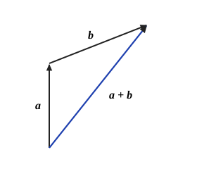
这三个平均值之间成立如下关系：
这就是说，算术平均值不小于几何平均值，几何平均值不小于调和平均值.
当 $n = 2^k \; (k \in \mathbb{N}^*)$ 时，不等式是 $\frac{a+b}{2} \ge \sqrt{ab}$ 的直接推论.
当 $n \ne 2^k$ 时，取 $l \in \mathbb{N}^*$，使 $2^{l-1} < n < 2^l$. 记 $$ \sqrt[n]{a_1 a_2 \cdots a_n} = \bar{a}, $$ 在 $a_1, a_2, \dots, a_n$ 后面加上 $(2^l - n)$ 个 $\bar{a}$，将其扩充成 $2^l$ 个正数. 对这 $2^l$ 个正数应用不等式，得到 $$ \frac{1}{2^l}[a_1 + a_2 + \cdots + a_n + (2^l - n)\bar{a}] \ge (a_1 a_2 \cdots a_n \bar{a}^{2^l - n})^{\frac{1}{2^l}} = \bar{a}, $$ 整理后即有 $$ \frac{a_1 + a_2 + \cdots + a_n}{n} \ge \sqrt[n]{a_1 a_2 \cdots a_n}. $$ 对 $\frac{1}{a_1}, \frac{1}{a_2}, \dots, \frac{1}{a_n}$ 使用上面的结论，便得到右边的不等式. 证毕
习 题 1.2
- 1. 设 $S = \{\alpha, \beta, \gamma\}, T = \{a, b, c\}$，问有多少种可能的映射 $f: S \to T$，其中哪些是双射？
-
2.
(1) 建立区间 $[a, b]$ 与 $[0, 1]$ 之间的一一对应；(2) 建立区间 $(0, 1)$ 与 $(-\infty, +\infty)$ 之间的一一对应.
-
3.
将下列函数 $f$ 和 $g$ 构成复合函数，并指出定义域与值域：
(1) $y = f(u) = \log_a u, \quad u = g(x) = x^2 - 3$；(2) $y = f(u) = \arcsin u, \quad u = g(x) = 3^x$；(3) $y = f(u) = \sqrt{u^2 - 1}, \quad u = g(x) = \sec x$；(4) $y = f(u) = \sqrt{u}, \quad u = g(x) = \frac{x-1}{x+1}$.
-
4.
指出下列函数是由哪些基本初等函数复合而成的：
(1) $y = \arcsin \frac{1}{\sqrt{x^2+1}}$；(2) $y = \frac{1}{3}\log_a^3(x^2-1)$.
-
5.
求下列函数的自然定义域与值域：
(1) $y = \log_a \sin x \quad (a > 1)$；(2) $y = \sqrt{\cos x}$；(3) $y = \sqrt{4 - 3x - x^2}$；(4) $y = x^2 + \frac{1}{x^4}$.
-
6.
问下列函数 $f$ 和 $g$ 是否等同？
(1) $f(x) = \log_a(x^2), \quad g(x) = 2\log_a x$；(2) $f(x) = \sec^2 x - \tan^2 x, \quad g(x) = 1$；(3) $f(x) = \sin^2 x + \cos^2 x, \quad g(x) = 1$.
-
7.
(1) 设 $f(x+3) = 2x^3 - 3x^2 + 5x - 1$，求 $f(x)$；(2) 设 $f\left(\frac{x}{x-1}\right) = \frac{3x-1}{3x+1}$，求 $f(x)$.
- 8. 设 $f(x) = \frac{1}{1+x}$，求 $f \circ f, f \circ f \circ f, f \circ f \circ f \circ f$ 的函数表达式.
- 9. 证明：定义于 $(-\infty, +\infty)$ 上的任何函数都可以表示成一个偶函数与一个奇函数之和.
- 10. 写出折线 $ABCD$ 所表示的函数关系 $y = f(x)$ 的分段表示，其中 $A = (0, 3), B = (1, -1), C = (3, 2), D = (4, 0)$.
- 11. 设 $f(x)$ 表示图 1.2.8 中阴影部分面积，写出函数 $y = f(x), x \in [0, 2]$ 的表达式.
- 12. 一玻璃杯装有汞、水、煤油三种液体，密度分别为 $13.6\text{ g/cm}^3, 1\text{ g/cm}^3, 0.8\text{ g/cm}^3$，上层煤油液体高度为 $5\text{ cm}$，中层水液体高度为 $4\text{ cm}$，下层汞液体高度为 $2\text{ cm}$（如图 1.2.9），试求压强 $P$ 与液体深度 $x$ 之间的函数关系.
- 13. 试求定义在 $[0, 1]$ 上的函数，它是 $[0, 1]$ 与 $[0, 1]$ 之间的一一对应，但在 $[0, 1]$ 的任一子区间上都不是单调函数.
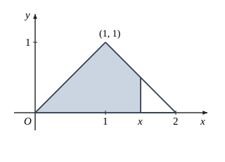
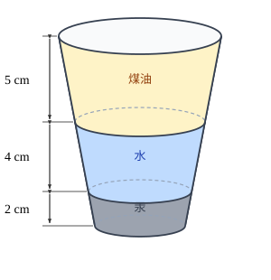